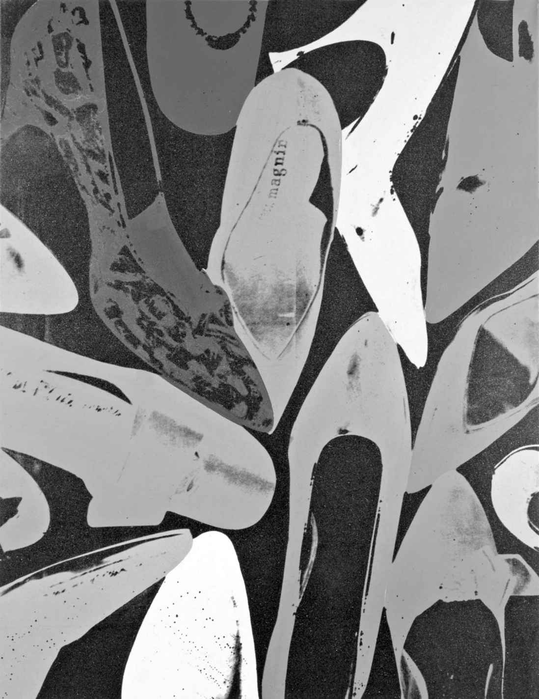
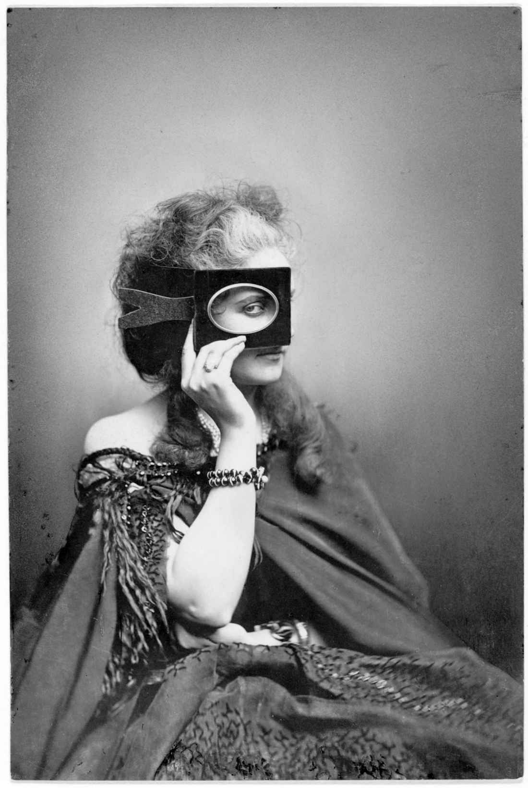
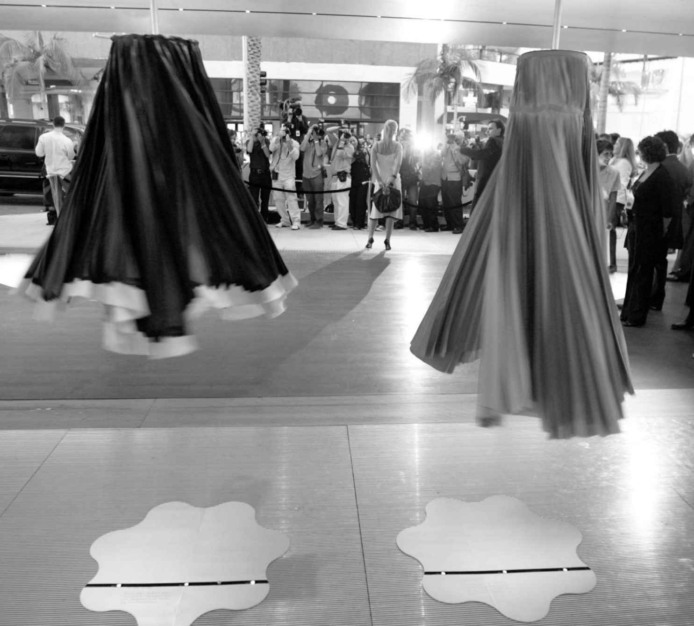

安迪· 沃霍尔1981年的作品《钻石粉鞋》（Diamond Dust Shoes ）呈现了在漆黑背景下杂乱摆放的色彩明亮而鲜艳的女士浅口便鞋的画面。作品以照片丝网印刷为基础，鞋子从顶角拍摄，观者犹如正在俯视衣橱隔板上零散的一堆鞋子。一只炫目的橘色细高跟鞋耸立在一只端庄的番茄红色圆头鞋旁边，而另一只深蓝色缎面晚装鞋旁边是一只橙红色带蝴蝶结的船形高跟鞋。所有的色彩都是逐层叠加在画面之上的，制造出一种将众多风格与造型的鞋子拼凑在一起的卡通效果。
照片的剪裁给人营造出一种这堆鞋子难以计数的印象，例如一只淡紫色靴子只露出一点鞋尖可见，从画框边缘伸进了画面。这一图像经过了艺术家精心的组织；即便看上去杂乱，但每一只鞋都是巧妙陈设的，并露出数量刚好的鞋内商标可见，以此强化它们的高端时尚地位。画作令人想起时尚大片与鞋履店铺，并以此指涉了对时尚来说基本的视觉与真实消费行为的统一。沃霍尔的画作在丙烯颜料的光泽下显得平整光洁，这种光泽感在整幅画面上撒开的“钻石粉”的作用下得到了加强，这些“钻石粉”折射光线时让观者眼前一片熠熠生辉，炫目迷人。作品闪闪发光的表面明确地展现了时尚光鲜亮丽的外表以及它能够改变日常生活的能力。

图6 安迪· 沃霍尔1981年的《钻石粉鞋》展现了充满魅力与诱惑的鞋履设计
1950年代末，沃霍尔以商业广告艺术家的身份工作，他的客户就包括I.米勒制鞋。他为其绘制了众多妖娆、明快的鞋履作品，尽显魅惑之态。他自身与商业的联姻还有对流行文化的热爱意味着时尚对他来说是一个理想的主题。时尚在沃霍尔的丝网印刷画和其他各种作品中占据着重要地位，而他也不断运用着装与配饰，包括他那著名的银色假发来改变自己的身份。1960年代，他还开了一家精品店，起名“随身用品”（Paraphernalia），混搭销售一众时装品牌，比如贝齐· 约翰逊（Betsey Johnson），还有福阿莱与图芬（Foale and Tuff in）。“随身用品”精品店的开幕仪式上还请来“地下丝绒”乐队演出，因而将沃霍尔在不同方向上的开创性艺术创作综合在了一起。他深刻理解到在这十年里，时尚、艺术、音乐与流行文化之间已经结盟。将先锋流行音乐与基于色彩明艳的金属、塑料以及撞色印花的抛弃型和实验性服装进行融合，不仅表达出这一时代的创造激情，还帮助确立了时尚标准。对于沃霍尔来说，艺术或设计形式不分高低。时尚从不因其商业上的紧迫性或者说它的短暂易逝而受人唾弃。相反，这些固有特性在他的作品中被大肆宣扬，作为他对当代快节奏生活的着迷的一部分。于是，《钻石粉鞋》令人炫目的表面赞美了时尚对于外在美好与华丽的关注，而他的精品店则吸引人们关注处于时装业最核心的商业行为与消费主义驱动力，很多当代艺术市场的核心也确实是如此。在沃霍尔的艺术作品里，时尚固有的短暂易逝而又物质至上的缺陷，变成了对孕育时尚之文化的评述。对沃霍尔来说，大众文化与高端奢侈品的各种元素可以和谐共存，正如它们在各类时尚杂志或各种好莱坞电影中共存一样。在他的作品里，复制品与孤品拥有相同的地位，他也能非常轻松地在不同的媒介间转换，对电影和丝网印刷或平面设计的各种可能性怀有同样的热情。沃霍尔既不认为这些限制了他的创作，也不觉得应将商业剥离艺术以保持它的合理性，而是拥抱了各种矛盾体。在他1977年的《安迪· 沃霍尔的哲学：波普启示录》［The Philosophy of Andy Warhol(From A to B and Back Again) ］一书中，他写到推动着他的艺术前进的种种交融难厘的界限：
自19世纪中叶起，时尚就加快了步伐，触及更多的受众，拥抱工业化的生产过程，并运用多种引人注目的手段完成商品销售。艺术经历了同样的变革进程：艺术市场不断成长，开始拥抱中产阶级，机械化复制改变了艺术只能专属于某个藏家的观念，艺术机构及私人画廊重新思考了艺术品陈列与销售的方式。时尚和艺术的主题之间同样存在着相互交叉，从身份与道德两大议题，到对艺术家或设计师在广泛文化下被感知方式的关心，再到对身体的表现与运用的关注。
有时时尚也会被呈现为艺术，但这也引出一连串问题。一些设计师在自己的作品中化用了艺术创作方式，但他们仍身处时装产业框架之内，同时运用这些借鉴来的方法探索时装的本质。例如，职业生涯早期的维果罗夫就立志专注举办时装秀，而不愿意制作可供销售的衣服，他们的设计于是都成了孤品或少量制作的款式，它们的存在只是为了佐证那场时装秀在时装体系中的重要性，而非成为实穿的服装。尽管如此，他们的作品依然占据着时装界的一席之地，接受着时装记者们的热烈评议。这似乎是在为他们后面推出的几个时装系列展开宣传活动，这些后续的设计系列被投入生产。他们的作品同样强调了不同类型设计师之间的差异。维果罗夫对时装的诠释融入了他们对时装秀角色的迷恋，以及它检验景观与展示边界的潜力。在自己这些时装系列的秀场呈现中，他们游走于艺术、戏剧以及电影之间。2000年秋冬系列发布时，两位设计师慢慢地给一位模特套上一层又一层的衣服，最终为她穿上了整个系列的服装。这其实呈现了在真人身体上完成试衣的过程，它是传统时装设计最核心的部分。最后包裹着女模特的那些尺寸夸张的时装成品看上去几乎将她变成了一个僵硬的人偶、一个活着的人体模型，以及设计师手中的玩物。在2002/2003年的时装秀上，所有服装都是明艳的钴蓝色，在秀中充作电视电影特效拍摄中使用的蓝幕。他们将电影投影在模特的身体上，模特们的身形尽失，在电影画面投射于身体表面时他们的身体似乎也在明灭闪烁在维果罗夫的设计与秀场展示中，艺术化方式的运用为时装实践增色良多，但这未必能把他们的时装转变为艺术。他们的作品在国际时装周的大环境中展示，指向的是时尚群体，强调的是服饰与身体交流的方式。哪怕在还未将自己的服饰投入批量生产的阶段，他们也是遵循着时装季设计发布，还有尤为重要的一点，他们一直忠于时装的基础元素：面料与身体。
有时人们将时装与艺术相提并论，以赋予它更高的可信度、深度以及意图。不过，比起对时装真实意义的揭示，这种做法也许更多地暴露了西方世界对于时装缺乏这些特质的担忧。当一条1950年代的巴黎世家（Balenciaga）连衣裙陈列在画廊的古旧玻璃展柜中，它也许看起来会像一件艺术品。不过，为了展现它的价值或创造它时所运用的技艺，它并不需要被称为一件艺术品。如同建筑等其他设计形式，时装也有着自己独特的追求，如此便避免自己成为纯粹的艺术、技巧工艺或是工业设计。它实际上更像是一种吸纳了所有这些方式的各种元素的三维设计。巴伦西亚加先生严苛要求精确的形态，为面料的褶裥与结构带来平衡感与戏剧化效果，再辅以工坊里工人们的精湛手工，让这一袭裙子变成了一件卓越的时装。它并不需要被冠以艺术之名来佐证其地位，艺术这一字眼忽略了在渴望创造并挑战时装设计界限之外，巴伦西亚加制作裙子的原因：希望装扮女性，并最终卖出更多设计。我们不应认为这一层诉求削弱了他所取得的成就，反倒应该看到，它帮助我们进一步理解了巴伦西亚加的创作方式，他全力开拓种种“边界”，以创造能够给予穿衣人与观衣人同等启迪的时装。
理解时装应当以它自己的语境为基础，这使得时装与艺术、文化其他方面的相互交织更加妙趣横生。它为艺术、设计以及商业在一些时装实践者的作品中发生联系、交织重叠开辟了新的路径。的确，时装能够如此令人着迷而又令某些人感觉难以捉摸的一个重要原因就是，时装总是能侵吞、重组并挑战种种既有定义的边界。因此，时装能够突出关于一种文化中何为可贵事物的矛盾。安迪· 沃霍尔和维克多与罗尔夫等各种各样的设计师与艺术家们都在利用文化矛盾和态度创作作品。对时装来说，关注身体与面料，以及它常常以穿着与销售为设计目的这一事实，将其与纯艺术区别开来。不过，这并不妨碍时装拥有自己的意义，而艺术世界对时装一如既往的迷恋正突显了它在文化上的重要性。
肖像画与身份塑造
时装与艺术之间最显而易见的联系大概就是服装在肖像画中扮演的角色。16世纪，宗教改革在北欧的影响致使宗教绘画的委托需求下降，艺术家们因而转向新的绘画主题。从文艺复兴开始，人文主义对个体的关注让众多的贵族成员开始希望由艺术家为自己绘制肖像。肖像画的成长建立起艺术家与画主、时装与身份表达之间的关联。霍尔拜因笔下的北欧皇室与贵族成员肖像画探索了油画所能够传达的视觉效果，表现出绸缎、丝绒以及羊毛等不同面料之间的质感差异。霍尔拜因精细的绘画水平直接体现在他为肖像画准备的详尽底稿上。珠宝首饰的精巧细节在他的素描里被悉数摹画，构成女士头饰的精致的层层平纹棉布、亚麻布以及硬质衬底在他的画笔下与主人公的脸庞和表情一样细腻。霍尔拜因深深明白时髦的衣饰对于表现他这些主顾们的富有与权势以及性别与地位发挥着重要的作用。这些属性在他的画作中被清晰地呈现出来，不仅成为过去服饰风格的纪念，又令人想起时装在构建一种能让同时代人轻松领会的身份时曾经扮演的角色。他所绘的亨利八世系列肖像展现了当时追求的视觉上的宏大，利用层层垫高的丝绸与锦缎来增加身形大小与威严之感。黄金与珠宝的镶边与配饰进一步增强了这种效果，外层的面料适度裁剪收短，目的就是要露出里面更加华贵的服饰。他绘制的女性肖像同样细节丰满。甚至在他1538年为丹麦的克里斯蒂娜绘制的风格沉郁的肖像画中，主人公所穿丧服面料的华美依旧一览无余。光线洒落在裙面上深深的褶皱和宽松堆叠的两肩上，强化了她这身黑色缎面长裙所散发的柔和光泽。与之鲜明对比的，是由领口直贯下摆的两道棕红中略泛茶色的皮草，还有她手握的一双软质浅色皮手套。与这一时期欧洲各地的其他艺术家一样，霍尔拜因的画面构图将焦点集中在主人公的面部，同时又极为重视对他们华丽服饰的展示。
从意大利的提香到英国的希利亚德，面料与珠宝的华美在各个艺术家的作品中呈现。甚至当服装素净又未施装饰时，如在丹麦的克里斯蒂娜肖像中，材质的奢华在主人公身份地位的构建中也扮演了重要角色。这种展示的重要性对于当时的人们来说是非常容易理解的。那时的纺织品非常昂贵，因而备受珍视。有能力购置穿着大量的金线织物与丝绒面料充分显示出主人公的财富。层层外衣之下不经意露出的雪白的男士衬衣和女士罩衫，进一步强化了主人公的地位。清洁在当时也是身份地位的一种标记，不管是及时清洗亚麻布料保持其洁白，还是浆洗轮状皱领并且恰当地压出复杂形状，都需要大量的仆人。
艺术不仅仅为彰显皇室与贵族身份服务，它还表现着个性、审美，还有主人公与时装之间的关系。当霍尔拜因等艺术家奋力精确描摹当时的时装，并将之视为自己作品总体的现实主义手法的组成部分时，另一些艺术家则运用了更加华丽的创作手法。17世纪期间，凡· 戴克等人笔下的主人公，常常身着各色垂褶的面料，它们以各种超乎自然的方式萦绕着他们的身躯。艺术家们用神话般的服饰塑造人物的身体，有意地让人联想起希腊众女神。女人们围裹着柔光绸缎，看上去如同飘飞在身体四周，浮动于肌肤表面之上。画中男人们身穿的服饰，一部分源于现实，一部分则是幻想虚构。虽然凡· 戴克也画时髦的裙子，但他常常用自己一贯的审美对其进行改造，喜好反光的表面与连绵的大色块。这样一来，艺术便影响了时装，它不只记录了人们穿什么、怎么穿，更记录了人们理想中的美丽、奢华与品味。
当时装在18世纪开始逐季更迭，艺术与时装的关系变得更加复杂起来，有的艺术家开始担忧这种变化将会影响他们作品的重要性。一些肖像画师，例如约书亚· 雷诺兹，追求作品经久不衰，希望创造出能超越自身时代的画作。时装似乎妨碍了他们实现抱负，因为它的存在能把一幅画拉回到其创作的时代。由于流行风格年复一年地改变，就算不是逐季变换，肖像画所属的年代完全可以精确判定。对凡· 戴克和他画中的主人公而言，仿古典风格的服装一定程度上只是对梦幻华服的一种有趣尝试，对雷诺兹而言，它则是一种严肃的手法，试图实现与时装的割裂，并提出一种能确保肖像画对后世意义重大的另辟蹊径的方法。他因此竭力从自己的艺术中抹去时装的痕迹，让笔下的主人公裹上假想出的衣料，将人物形象与古代雕塑上可见的那种古典垂褶服饰融为一体。时装拥有一种强大的力量，它能够塑造人们对身体与美的认知，这被认为破坏了雷诺兹的意图。尽管他画出的裙子通常款式朴素，但18世纪最后25年里的时装大多如此，比如他所钟爱的拖地而修身的廓形。主人公对时髦形象的渴望同样阻碍了他崇尚古典的审美。女性画主们坚持戴上高耸并扑上白粉的假发，还经常点缀上羽毛装饰。她们的面庞同样搽成白色，双颊则施以时髦的粉红色脂粉。
主人公想让自己看起来时髦的诉求，再加上艺术家难以挣脱自己所处时代的主流视觉理念，这意味着想要绘制出一幅完全脱离自身时代背景的肖像画几乎是不可能的。安妮· 霍兰德在她的《看透服饰》（Seeing through Clothes ）一书中提出：
霍兰德认为，通过艺术呈现能够“认识”到的不仅仅是身着服装的身体。她还认为艺术家们眼中的景象其实是同时代时装风尚培养起来的，甚至在描绘裸体时，身体的形态与展示方式都受到了流行时尚理念的调和。15世纪克拉纳赫笔下裸体上发育不足又位置靠上的双乳、位置较低的腹部，1630年代鲁本斯的《美惠三女神》（Three Graces）全身像，还有19世纪之初戈雅绘制的或着衣或赤裸的《玛哈》（Maja），都证明了流行的廓形对人体形态描摹方式的深刻影响。在每个例子里，穿上服装之后的人体形态被塑身衣、衬垫以及罩袍重塑，又强加在画中的裸体人物体态上。所以，肖像画与时装的关系是根深蒂固的，也充分说明了视觉文化在任一时代都有着相互关联的本质。
这种相互的联系在19世纪变得更加显著，塞尚、德加还有莫奈等艺术家开始把时装图样作为他们笔下女性形象和她们所穿服饰的范本。由于许多人都是通过图像来了解时装的，不管是油画、素描、时装图样，还是后来的照片，观看者与艺术家一样，一直以这些图像为依据，被引导着理解他们在自己周遭所见的那些着装后的身体。实际上，艾琳· 里贝罗进一步延伸这一观点，认为定制或购买艺术品这种行为中包含的物质主义一定程度上也是一种消费文化，后者见证了19世纪后半叶时装产业的成长，以及顶级肖像画家们与诸如查尔斯· 弗雷德里克· 沃思这样的高级时装设计师们价位相当的昂贵收费。里贝罗在她的《华服》（Dress ，1878）一书中引用了玛格丽特· 奥利芬特的话以佐证它们这种紧密的联系：“现在出现了一个全新的阶层，她们的穿衣打扮紧随画像上的形象，当她们想买一件礼服时会问‘这件能上画吗？’。”

图7 19世纪中叶，卡斯蒂廖内伯爵夫人在大量摄影作品中创造出自己独特的个人形象
时装与其图像呈现之间的模糊边界最引人注目的例子，大概要数皮埃尔—路易· 皮尔森自1856年到1895年间为卡斯蒂廖内伯爵夫人维尔吉尼娅· 维拉西斯拍摄的400余张照片组成的集子。她积极参与了自己的穿衣、造型以及姿势设计。她自己也因此充当着艺术家的角色，把控着自己在时装中的展示以及照片中的形象表达。她精心装点的19世纪中叶的各式裙子如同时装照片一般发挥作用，同时跨越时装图像的范畴建构起自己与衣服独特的关联。卡斯蒂廖内很清楚自己是在每张照片里进行表演，她将自己置于一个恰如其分的环境里，不管是在摄影棚里还是在阳台上。她充分示范了“自我造型”的魅力，运用服饰来定义或架构起人们对她的认知，以及她身体所展现出的形态。对她而言，时装与艺术之间的相互关联是一件强大的工具，让她得以尝试丰富多样的身份，就像皮埃尔· 阿普拉克西纳与格扎维埃· 德马尔涅认为的：
时装在视觉文化中扮演着意义非凡的角色，真实的服装与它们在艺术和杂志中的再现之间又存在着无法割裂的联系，这意味着艺术家们常常对时装所具力量的态度摇摆不定。温特哈尔特和约翰· 辛格尔· 萨金特等肖像画家利用主人公的时髦服饰塑造画面构图，同时也表明画主们的地位与个性，而另一类艺术家，其中以前拉斐尔派最为知名，则全力抵抗着时装对美、风格以及审美典范无孔不入的制约。到了1870年代，掀起了一场唯美服装运动，它力求为时装对身体的限定，尤其是塑身衣对女性身体的禁锢提供另一种选择。无论男女，都转而选择了已成为历史的版型宽松的时装风格。但是，唯美服装本身也成了一种时装潮流，虽然它明确了一个观点，即艺术家与纯艺术爱好者们应当穿得不一样些，应当拒绝时装流行风格。尽管他们可能会拒绝同时代的时装潮流，但他们对自己穿着打扮那种刻意的淡漠，反而含蓄地认可了时装能够塑造自己形象的功能以及服装塑造身份的力量。
跨界与再现
20世纪，艺术与时尚之间发生了大量的相互借鉴与跨界合作。高级时装不断演进的审美力将精湛的手工技艺与个别设计师的愿景和压力结合起来，打造了牢固的商业运作模式，以保障品牌的持久繁荣。高级时装设计师们努力地构建起自己的时装店在当代美理念下的个性特质，这必然会使他们将现代艺术视为一种视觉的启迪与灵感来源。在保罗· 普瓦雷的实践中，这意味着一种对异域风情理念的探索，他像画家马蒂斯那样前往摩洛哥游历，寻找着与西方世界全然不同的对色彩与形式的运用。普瓦雷梦幻般的浓郁色彩块、垂褶的伊斯兰女眷式裤装，还有宽松的束腰外套共同搭建起一种女性气质的典范，而这种典范自19世纪晚期开始就越来越清晰地出现在大众流行与精英文化里。普瓦雷和妻子丹尼斯穿着东方风格的长袍、斜倚在沙发上的样子被摄影师记录了下来，照片背景就是他们所办的那次臭名昭著的“一千零一夜”派对。联系普瓦雷的设计一并审视，这些图像使他的高级时装店成为奢靡与颓废的代名词。重要的是，它们还将普瓦雷放在不妥协的摩登者的地位，尽管他的许多服装设计基础仍旧是古典元素。普瓦雷很清楚他需要利用独具创意的艺术家概念以培养一种个人形象，同时又制作出畅销国外尤其是美国市场的服装。与其他高级时装设计师一样，他的作品必须平衡好个人客户对定制服装的需求——这与纯艺术的独创性更为相似——以及创作适当款式销售给各国制造商进行复制的商业需要这两者之间的关系。虽然普瓦雷努力维系着一种艺术家的形象，也充分利用了“俄罗斯芭蕾”的影响力，但他还是踏上了前往捷克斯洛伐克和美国的宣传之旅，目的是要在更广泛的受众中提升自己作品的知名度。
南希· 特洛伊也写到了20世纪前几十年里纯艺术创作与高级时装之间的微妙关系。她发现，每一领域的变化都是对大众与精英文化之间越来越模糊的边界的反应，因而也是对“真正”原创与复制行为之间的差别做出的反馈。她认为，设计师和艺术家们试图“探究、掌控、引导（尽管未必一定能避开）商业与商品文化所谓的腐化影响”。
高级时装设计师们有各种各样的方式来恰当处理这些问题，并将当代艺术的影响力吸纳到他们的时装设计之中。在明艳撞色风格以及注重戏剧化个人呈现的影响下，普瓦雷的作品不断涌现。于是他与艺术家们进行直接的跨界合作也就不足为奇了，代表性的合作项目就有马蒂斯和杜飞的织物图案设计。首屈一指的先锋艺术家们与时装行业里的大牌设计师之间这样的联系看起来既理所应当又能互利共赢。任意一方都能够尝试、探究新方式去思考并呈现自己心中的理念。通过与另一种形态的前卫当代文化进行交融，以将视觉与物质相结合，各方都有可能从中受益。艾尔莎· 夏帕瑞丽推出了更广泛的跨界合作，由她与萨尔瓦多· 达利和让· 科克托共同完成的设计最广为人知。这些联袂合作创造出的服饰赋予超现实主义信条以生命，其中就包括达利的“龙虾裙”。跨界合作把超现实主义艺术运动所热衷的并列手法，以及它与女性特质认知之间的复杂关系带进了有形的世界，穿着夏帕瑞丽设计的人们把自己的身体变成了关于艺术、文化以及性别的主张。
对玛德琳· 维奥内而言，她对当代艺术理念的兴趣体现在她对三维立体剪裁服装技术的探索中，给她灵感的正是意大利未来主义碎片化的表达风格。她与欧内斯托· 塔亚特合作的设计充分展示了艺术家的空间实验与设计师对身体和面料关系的思考所达成的一种动态结合。她的设计由艺术家来做时装图样，充分体现了这种动态的联系，也让她的设计成为未来主义的女性特质典范。模特的身体还有身穿的服装都被细细分割，不仅展现了它们的三个维度，又展示了它们的运动线条及其内在的现代性。
如果说普瓦雷与艺术的联袂借助了他在设计表达中对奢华与自由的渴望，那么对维奥内来说这成为她探寻处理与表现人体新方法的一部分。尽管这两位设计师的作品都复杂精细，它们还是被投入到大量的复制生产中。他们心中对生产商们大肆滥用自己作品的忧虑暴露出现代时装（当然，也包括艺术）固有的矛盾。正如特洛伊所指出的那样，面临风险的不只是艺术完整性的典范，复制行为也可能会破坏他们的生意，损害他们的利益。
鉴于艺术与时装逐渐深入商业世界，艺术家和设计师们不可避免地会把大批量生产的成衣视作跨界合作的新板块。这类合作项目使这两个领域之间的冲突以及它们与工业和经济之间的关系突显出来。它可能表现在认为艺术具有改变大众生活的强大力量的政治信条上，正如在俄国构成主义派设计师瓦瓦拉· 史蒂潘诺娃1920年代的作品中表现的那样。当与她同时代的设计师们几乎都因时装的短暂性而避开它时，她却由衷地感觉到，虽然时装与资本主义和商业确实存在问题重重的关联，但它必然会变得更加合理，这与她对苏联时代“日常生活”的评价是一致的。她因而与她的构成主义派同侪们分道扬镳，开始明确提出：
时装能够更为直接地联结更广泛的群体，这种能力让它一直都是那些想让自己的作品进入大众领域的艺术家们理想的工具。这大概遵循了普瓦雷在20世纪之初确立起来的先例，比如1950年代毕加索为美国一系列纺织品设计的那些妙趣横生的印花图案就体现了这一点，这些图案设计最终为许多时装设计师所采用，其中就有克莱尔· 麦卡德尔。到了1980年代初，薇薇恩· 韦斯特伍德与涂鸦艺术家凯斯· 哈林的合作设计在精神上更加接近夏帕瑞丽跟艺术家们的联名合作系列。不管在哪个例子中，他们的协同创作都体现着一种相投的兴趣与意图，以韦斯特伍德与哈林为例，他们都喜欢街头文化，还喜欢挑战人们对身体的既有观念，这些都表达为装饰着艺术家画作的各式服装。
许多时装与艺术联名合作中最为核心的商业考量与消费理念，在20世纪末到21世纪初开始变得更加显而易见。川久保玲采用的严谨知识分子式设计方法当然毋庸置疑，但令人眼前一亮的还有她成功地调和了艺术追求、时尚还有消费三者之间潜在的令人担忧的关系。彼得· 沃伦将日本设计师处理这种关系的方式与维也纳工坊的艺术家们进行类比，后者始终致力于把服装作为“大环境”的其中一部分来设计。这一环境涵盖了或许最为重要的零售空间，对CDG来说，它已经演变成了川久保玲设计美学的朝圣所，并成为从未中断的跨界联名合作点。一流的建筑师们，比如伦敦设计团队“未来系统”（Future Systems），为她在纽约、东京和巴黎设计了多家精品店。她的室内陈设模仿了标志性的现代主义艺术作品，比如她的华沙游击店中看似随意的设计布置，其实借鉴了包豪斯派设计师赫伯特· 拜耶在1930年的法国室内设计师协会年展德国章节中呈现的开创性作品，即固定在墙面上的一模一样的椅子。
川久保玲和阿尼亚斯· B.等设计师一样，进一步利用了商业零售空间与画廊之间的模糊性，开始在自己的精品店里举办展览。在CDG东京店中，产品展示包括辛迪· 雪曼的摄影作品，它们与时装通常的陈列相得益彰。类似的展览早已有之，比如纽约百货公司罗德泰勒在1920年代晚期就举办过一场装饰艺术展览，伦敦的塞尔福里奇百货1930年代也展出过亨利· 摩尔的雕塑作品。不过，到了20世纪末它们之间的关系更为复杂，两个领域之间的关联也更牢固地确立起来，在艺术家与设计师们探讨身体与身份的作品中尤为如此。
21世纪之初，艺术与时装之间的关系依旧令人担忧，它同样展现了文化价值观以及人们潜意识中的各种欲望。艺术中的时装与时装中的艺术两者间的界限变得模糊，其各自展示的空间也变得不再泾渭分明。商店、画廊及博物馆运用类似的方法来展示并突出艺术与时装的消费，以及它们各自头戴的文化光环。路易威登出资为品牌与理查德· 普林斯联名合作的2008春夏系列印花手袋举办的盛大派对就是一个极好的例证。这场派对在纽约古根海姆美术馆里举行，并选择了正在该馆展出的普林斯个展的最后一天晚上，引来了一些专业领域媒体的评论，评论探讨了商业赞助带来的诸多问题以及时装在美术馆中的地位。这个例子充分说明，虽然艺术与时装密不可分地联系着，但是当它们被太过紧密地捆绑的时候，两者在相互比较中既可能会获益，也可能会有所损失。
缪西娅· 普拉达一直在积极地检验这些不同的观点。1993年，她专门建立普拉达基金会来支持并宣传艺术事业。她还请来雷姆· 库哈斯等知名建筑师为自己设计标志性的“中心”（“epicentre”）店，这些店铺为她在店铺层展示时装设计的同时举办艺术展览提供了空间。其中就有她在纽约苏荷区门店展示的安德烈亚斯· 古尔斯基巨幅摄影作品。古尔斯基作品中对消费文化的频繁抨击反倒给普拉达展出他的作品增添了一抹反讽的意味。于是，建筑师、艺术家和设计师们都呈现出一种心照不宣且自知的状态，他们创造着时装、艺术还有建筑，同时又不约而同地品评着自己的这些行为。
缪西娅· 普拉达与时装及艺术之间的复杂关系，在她打造的名为“腰肢以下：缪西娅· 普拉达、艺术与创造力”（Waist Down:Miuccia Prada,Art and Creativity ）的裙装展览中表现得最为淋漓尽致，她用这次展览检视了自己过去时装系列中裙装设计的演变过程。展览由库哈斯的建筑团队设计，在全球的不同场地进行巡展，比如2005年的上海站就在和平饭店举办。展览运用了大量实验性的展示方式：有的裙子从天花板上悬垂下来，撑在特制的机械衣架上不停旋转；有的裙子平铺展开并覆上塑料外层，看上去宛如一只水母装饰物。普拉达的商业敏锐性与全球范围内的成功经营使得所有这些创新设计成为可能，而她在艺术及设计世界里的人脉则促使它们最终得以实现。

图8 2006年“腰肢以下”巡回展采用了充满创意的方式来展示普拉达裙装
然而，普拉达本人似乎格外钟情于这些关系的不确定性，同时对于这种不确定性如何联结起时装和艺术，她的认识也自相矛盾过。当展览于2006年移师她的纽约精品店时，普拉达对记者卡尔· 斯旺森表示“商店本来就是艺术曾经的立足之地”，但紧接着又为她在这些“中心”店里的展览和其他作品的地位进行辩驳，她强调：
这一矛盾居于时装与艺术关系的核心。艺术家与时装设计师们的跨界合作能够产生有趣的结果，但双方也都会不安于大众对这类作品的接受程度。作为视觉文化的两个重要组成部分，时装与艺术始终表达着并且不断构建起诸如身体、美还有身份等各类观念。不过，艺术的商业的一面通过它与时装的紧密关系得到揭示，而时装又似乎利用艺术为自己注入严肃与庄重感。这些跨界合作体现出，每一种媒介都可能既信奉消费主义，又充满概念；既富有内涵，又关乎外在的展示。正是这些相通之处让时装与艺术走到了一起，并为它们之间的关系增添了有趣的张力。